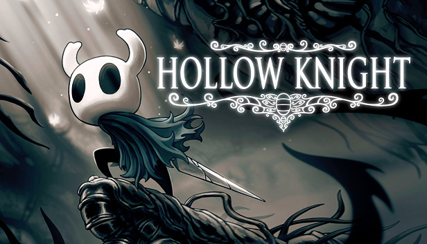
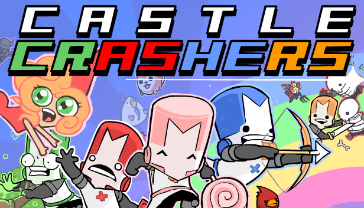

Paladins
TEMPO JOGADO: 444,4 HORAS CONQUISTAS: 51/58
Junte-se a mais de 25 milhões de jogadores em Paladins, a jogo que tiro em equipes com temática de fantasia que é uma grande sensação.
Use magia earmas como um lendário Campeão do Reino e personalize um baralho de cartas com habilidades especiais para montar o seu próprio estilo de jogo.
Paladins se passa em um mundo vibrante de fantasia e oferece uma grande variedade de personagens, que vão desde humanos bons de pontaria a goblins com armaduras tecnológicas, de elfos místicos a dragões com jatos. Cada Campeão traz um conjunto específico de habilidades ao campo de batalha, e novos Campeões são adicionados regularmente, mantendo o jogo sempre excitante.
Paladins é completamente gratuito para se jogar. Qualquer coisa que afete a maneira de jogar pode ser liberada conforme se joga, e itens e acessórios cosméticos estão disponíveis para compra.
Não importa seu estilo de jogo, você vai encontrá-lo em Paladins. Com o sistema de montagem de baralho de Paladins, você pode se tornar um sniper com visão aguçada, um especialista em granadas explosivas ou um matador implacável com um rifle de assalto - tudo com o mesmo Campeão. Escolha entre dezenas de cartas para personalizar suas habilidades e tornar cada campeão um personagem do seu jeito.Deusa antiga. Caçadora de recompensas interestelar. Pirata sanguinário. Gigante de gelo Você pode ser tudo isso e muito mais em Paladins.
Escolha entre centenas de aparências disponíveis em Paladins, ou descubra algumas novas a cada nova atualização.
Junte-se a mais de 25 milhões de jogadores em Paladins, a jogo que tiro em equipes com temática de fantasia que é uma grande sensação.
Use magia earmas como um lendário Campeão do Reino e personalize um baralho de cartas com habilidades especiais para montar o seu próprio estilo de jogo.
Paladins se passa em um mundo vibrante de fantasia e oferece uma grande variedade de personagens, que vão desde humanos bons de pontaria a goblins com armaduras tecnológicas, de elfos místicos a dragões com jatos. Cada Campeão traz um conjunto específico de habilidades ao campo de batalha, e novos Campeões são adicionados regularmente, mantendo o jogo sempre excitante.
Paladins é completamente gratuito para se jogar. Qualquer coisa que afete a maneira de jogar pode ser liberada conforme se joga, e itens e acessórios cosméticos estão disponíveis para compra.
Não importa seu estilo de jogo, você vai encontrá-lo em Paladins. Com o sistema de montagem de baralho de Paladins, você pode se tornar um sniper com visão aguçada, um especialista em granadas explosivas ou um matador implacável com um rifle de assalto - tudo com o mesmo Campeão. Escolha entre dezenas de cartas para personalizar suas habilidades e tornar cada campeão um personagem do seu jeito.Deusa antiga. Caçadora de recompensas interestelar. Pirata sanguinário. Gigante de gelo Você pode ser tudo isso e muito mais em Paladins.
Escolha entre centenas de aparências disponíveis em Paladins, ou descubra algumas novas a cada nova atualização.
Stardew Valley

TEMPO JOGADO: 187,5 HORAS CONQUISTAS: 17/40
Você está de mudança para o Vale... Você herdou a antiga fazenda do seu avô, em Stardew Valley.
Com ferramentas de segunda-mão e algumas moedas, você parte para dar início a sua nova vida. Será que você vai aprender a viver da terra, a transformar esse matagal em um próspero lar?
Crie a fazenda dos seus sonhos! Construa sua fazenda do zero em 1 de 5 mapas diferentes.
Domine as técnicas da agropecuária! Crie animais, plantações, máquinas úteis e muito mais.
Faça parte de uma comunidade local! Faça amizade com mais de 30 moradores diferentes de Pelican Town.
Personalize seu fazendeiro! Escolha entre centenas de opções para modificar seu personagem.
Organize-se e crie uma família! Compartilhe sua vida na fazenda em um relacionamento com 1 entre 12 personagens disponíveis.
Explore cavernas vastas e misteriosas! Encontre monstros perigosos e tesouros valiosos.
Você está de mudança para o Vale... Você herdou a antiga fazenda do seu avô, em Stardew Valley.
Com ferramentas de segunda-mão e algumas moedas, você parte para dar início a sua nova vida. Será que você vai aprender a viver da terra, a transformar esse matagal em um próspero lar?
Crie a fazenda dos seus sonhos! Construa sua fazenda do zero em 1 de 5 mapas diferentes.
Domine as técnicas da agropecuária! Crie animais, plantações, máquinas úteis e muito mais.
Faça parte de uma comunidade local! Faça amizade com mais de 30 moradores diferentes de Pelican Town.
Personalize seu fazendeiro! Escolha entre centenas de opções para modificar seu personagem.
Organize-se e crie uma família! Compartilhe sua vida na fazenda em um relacionamento com 1 entre 12 personagens disponíveis.
Explore cavernas vastas e misteriosas! Encontre monstros perigosos e tesouros valiosos.
Transformice
TEMPO JOGADO: 144,3 HORAS CONQUISTAS: 0/0
Transformice é um MMO Simulador de ratos de plataforma sobre dezenas de ratos correndo para pegar o queijo, tentando evitar as armadilhas, levando a situações inesperadas e hilárias!
Você tem menos que dois minutos para ser o primeiro rato a trazer de volta o queijo por todos os meios, com a ajuda do shaman ou dentro dos vários modos de jogo e milhões de níveis disponíveis: nunca uma partida é igual a outra!
Nesse incrível jogo “free to win” com chapéus, você irá sobreviver a busca pelo queijo? O Shaman irá te ajudar ou arruinar tudo? Junte-se aos 55 milhões que já testaram!
O Simulador de ratos que você estava esperando
Você é um ratinho que planeja roubar o queijo: a cada tentativa bem sucedida você irá liberar mais conteúdos e aumentar o nível de suas habilidades de Shaman... Mas você será capaz de conseguir isso?
As coisas geralmente acabam dando desastrosamente erradas com absurdas reações em cadeia cheias de uma física maléfica. Sempre há algum truque com essas construções mirabolantes.
Rato Shaman, Jogador pro ou noob? Bom ou Mau? É sua escolha!
Em cada rodada um dos jogadores será o Deus Shaman que pode usar suas habilidades para ajudar seus ratinhos a seguir seguramente direto para o queijo... Ou destruir tudo?
Quanto mais ratos você salvar, mais rápido você vai subir de nível na árvore de habilidades dos shamans para poder criar divinas construções! Crie aquilo que sua imaginação puder inventar, o destino do jogo está na ponta de seus dedos.
Nunca dois jogos serão idênticos
Será que um monte de ratos vão correr e matar todo mundo? Será que o shaman vai te levar ao queijo com sucesso? Ou arruinar tudo? Será que as bolas de canhão vão te deixar completar o mapa?
Com sete modos de jogo e 200 mapas oficiais, dezenas de modos de jogo extra criados pelos jogadores e mais de 5 milhões de mapas feitos por eles, quase infinitas possibilidades esperam por você. Sem contar com o que você pode fazer graças ao editor de mapas e aos módulos LUA.
Entre Pela Diversão, Fique Pelos Amigos
Venha jogar com seus amigos, conversem, trollem e riam juntos.
Participe nos próximos eventos, crie sua própria tribo e divulgue-a nos fóruns.
Desafie seus amigos a conseguir pegar os melhores títulos e desafie o mundo coletando seus “firsts”!
Você também será desafiado por dezenas ou até mesmo centenas de outros ratos para ser o melhor.
Transformice é um MMO Simulador de ratos de plataforma sobre dezenas de ratos correndo para pegar o queijo, tentando evitar as armadilhas, levando a situações inesperadas e hilárias!
Você tem menos que dois minutos para ser o primeiro rato a trazer de volta o queijo por todos os meios, com a ajuda do shaman ou dentro dos vários modos de jogo e milhões de níveis disponíveis: nunca uma partida é igual a outra!
Nesse incrível jogo “free to win” com chapéus, você irá sobreviver a busca pelo queijo? O Shaman irá te ajudar ou arruinar tudo? Junte-se aos 55 milhões que já testaram!
O Simulador de ratos que você estava esperando
Você é um ratinho que planeja roubar o queijo: a cada tentativa bem sucedida você irá liberar mais conteúdos e aumentar o nível de suas habilidades de Shaman... Mas você será capaz de conseguir isso?
As coisas geralmente acabam dando desastrosamente erradas com absurdas reações em cadeia cheias de uma física maléfica. Sempre há algum truque com essas construções mirabolantes.
Rato Shaman, Jogador pro ou noob? Bom ou Mau? É sua escolha!
Em cada rodada um dos jogadores será o Deus Shaman que pode usar suas habilidades para ajudar seus ratinhos a seguir seguramente direto para o queijo... Ou destruir tudo?
Quanto mais ratos você salvar, mais rápido você vai subir de nível na árvore de habilidades dos shamans para poder criar divinas construções! Crie aquilo que sua imaginação puder inventar, o destino do jogo está na ponta de seus dedos.
Nunca dois jogos serão idênticos
Será que um monte de ratos vão correr e matar todo mundo? Será que o shaman vai te levar ao queijo com sucesso? Ou arruinar tudo? Será que as bolas de canhão vão te deixar completar o mapa?
Com sete modos de jogo e 200 mapas oficiais, dezenas de modos de jogo extra criados pelos jogadores e mais de 5 milhões de mapas feitos por eles, quase infinitas possibilidades esperam por você. Sem contar com o que você pode fazer graças ao editor de mapas e aos módulos LUA.
Entre Pela Diversão, Fique Pelos Amigos
Venha jogar com seus amigos, conversem, trollem e riam juntos.
Participe nos próximos eventos, crie sua própria tribo e divulgue-a nos fóruns.
Desafie seus amigos a conseguir pegar os melhores títulos e desafie o mundo coletando seus “firsts”!
Você também será desafiado por dezenas ou até mesmo centenas de outros ratos para ser o melhor.
Beat Saber

TEMPO JOGADO: 119,3 HORAS CONQUISTAS: 20/26
Beat Saber is an immersive rhythm experience you have never seen before!
Enjoy tons of handcrafted levels and swing your way through the pulsing music beats, surrounded by a futuristic world.
Use your sabers to slash the beats as they come flying at you – every beat indicates which saber you need to use and the direction you need to match.
With Beat Saber you become a dancing superhero!
Feel the Rhythm: Immerse yourself in the smoothest combination of music beats and visual effects in Beat Saber’s truly unique gameplay.
Handcrafted Levels & Music: Unlike other rhythm games with generated content, music and levels in Beat Saber are drawn precisely by hand to enhance the music experience.
Compete in Multiplayer: Challenge your friends or random opponents around the world.
Challenging Campaign: Get better every day while completing objectives and challenges in the Campaign.
Rise Up the Global Leaderboards: Compete against other Beat Saberists around the world in various difficulties.
Easy to Learn, Fun to Master: Everyone can understand the basic game mechanics. It's easy for anyone to pick up and play.
Great Exercise: Exercise while dancing and slashing the beats, Beat Saber gets you moving.
Beat Saber is an immersive rhythm experience you have never seen before!
Enjoy tons of handcrafted levels and swing your way through the pulsing music beats, surrounded by a futuristic world.
Use your sabers to slash the beats as they come flying at you – every beat indicates which saber you need to use and the direction you need to match.
With Beat Saber you become a dancing superhero!
Feel the Rhythm: Immerse yourself in the smoothest combination of music beats and visual effects in Beat Saber’s truly unique gameplay.
Handcrafted Levels & Music: Unlike other rhythm games with generated content, music and levels in Beat Saber are drawn precisely by hand to enhance the music experience.
Compete in Multiplayer: Challenge your friends or random opponents around the world.
Challenging Campaign: Get better every day while completing objectives and challenges in the Campaign.
Rise Up the Global Leaderboards: Compete against other Beat Saberists around the world in various difficulties.
Easy to Learn, Fun to Master: Everyone can understand the basic game mechanics. It's easy for anyone to pick up and play.
Great Exercise: Exercise while dancing and slashing the beats, Beat Saber gets you moving.
Hollow Knight
TEMPO JOGADO: 119 HORAS CONQUISTAS: 38/63
Enfrente as profundezas de um reino esquecido
Abaixo da cidade moribunda de Dirtmouth jaz um reino antigo e arruinado.
Muitos são atraídos para o subterrâneo em busca de riquezas, glórias ou
respostas para antigos segredos.
Hollow Knight é uma aventura de ação clássica em estilo 2D por um vasto mundo interligado.
Explore cavernas serpenteantes, cidades antigas e ermos mortais; lute contra criaturas malignas e alie-se a insetos bizarros, e solucione mistérios antigos no centro do reino.
Características do jogo:
Ação clássica de rolagem de tela com todos os aperfeiçoamentos modernos.
Controles 2D bem ajustados. Esquive, ataque e golpeie enquanto passa pelos adversários mais letais.
Explore um vasto mundo interligado de caminhos esquecidos, florestas frondosas e cidades em ruínas.
Forje seu caminho! O mundo de Hallownest é expansivo e aberto. Escolha que caminhos tomar, que inimigos enfrentar e abra seu caminho adiante.
Evolua com novas habilidades e perícias poderosas! Ganhe feitiços, força e velocidade.
Pule a novas alturas com as asas etéreas. Arremeta à frente em um ágil lampejo.
Exploda inimigos com a Alma Flamejante!
Equipe-se com amuletos! Antigas relíquias que oferecem novos poderes e habilidades.
Escolha seus favoritos e trilhe uma aventura exclusiva!
Um enorme elenco de personagens fofos e assustadores revividos em animações tradicionais 2D quadro a quadro.
Mais de 130 inimigos! São 30 chefes épicos!
Enfrente feras selvagens e subjugue cavaleiros antigos em sua missão pelo reino. Vá ao encalço de todos os cruéis inimigos e adicione-os ao Diário do Caçador!
Entre na mente alheia com o Punhal dos Sonhos. Descubra outros lados dos personagens que encontra e dos inimigos que enfrenta.
Lindas paisagens pintadas com paralaxe extravagante que dá uma sensação de profundidade a um mundo paralelo.
Mapeie sua aventura com diversas ferramentas de mapa. Compre bússolas, penas, mapas e alfinetes para aprimorar seu entendimento das diversas paisagens tortuosas de Hollow Knight.
Composta por Christopher Larkin, a trilha íntima e assustadora acompanha o jogador em sua aventura. A música ecoa a majestade e a tristeza de uma civilização arruinada.
Conclua Hollow Knight para desbloquear o modo Alma de Aço, o desafio final!
Um mundo evocativo feito à mão
O mundo de Hollow Knight ganha vida em detalhes significativos, suas cavernas ficam cheia de vida com criaturas bizarras e terríveis, todas animadas manualmente em estilo 2D tradicional.
Cada nova área que você descobrir é lindamente exclusiva e peculiar, cheia de novos personagens e criaturas. Explore e descubra os segredos ocultos do caminho em ruínas.
Se você gosta de jogos clássicos, personagens fofos mas assustadores, aventuras épicas e mundos lindos e góticos, Hollow Knight estará à sua espera!
Enfrente as profundezas de um reino esquecido
Abaixo da cidade moribunda de Dirtmouth jaz um reino antigo e arruinado.
Muitos são atraídos para o subterrâneo em busca de riquezas, glórias ou
respostas para antigos segredos.
Hollow Knight é uma aventura de ação clássica em estilo 2D por um vasto mundo interligado.
Explore cavernas serpenteantes, cidades antigas e ermos mortais; lute contra criaturas malignas e alie-se a insetos bizarros, e solucione mistérios antigos no centro do reino.
Características do jogo:
Ação clássica de rolagem de tela com todos os aperfeiçoamentos modernos.
Controles 2D bem ajustados. Esquive, ataque e golpeie enquanto passa pelos adversários mais letais.
Explore um vasto mundo interligado de caminhos esquecidos, florestas frondosas e cidades em ruínas.
Forje seu caminho! O mundo de Hallownest é expansivo e aberto. Escolha que caminhos tomar, que inimigos enfrentar e abra seu caminho adiante.
Evolua com novas habilidades e perícias poderosas! Ganhe feitiços, força e velocidade.
Pule a novas alturas com as asas etéreas. Arremeta à frente em um ágil lampejo.
Exploda inimigos com a Alma Flamejante!
Equipe-se com amuletos! Antigas relíquias que oferecem novos poderes e habilidades.
Escolha seus favoritos e trilhe uma aventura exclusiva!
Um enorme elenco de personagens fofos e assustadores revividos em animações tradicionais 2D quadro a quadro.
Mais de 130 inimigos! São 30 chefes épicos!
Enfrente feras selvagens e subjugue cavaleiros antigos em sua missão pelo reino. Vá ao encalço de todos os cruéis inimigos e adicione-os ao Diário do Caçador!
Entre na mente alheia com o Punhal dos Sonhos. Descubra outros lados dos personagens que encontra e dos inimigos que enfrenta.
Lindas paisagens pintadas com paralaxe extravagante que dá uma sensação de profundidade a um mundo paralelo.
Mapeie sua aventura com diversas ferramentas de mapa. Compre bússolas, penas, mapas e alfinetes para aprimorar seu entendimento das diversas paisagens tortuosas de Hollow Knight.
Composta por Christopher Larkin, a trilha íntima e assustadora acompanha o jogador em sua aventura. A música ecoa a majestade e a tristeza de uma civilização arruinada.
Conclua Hollow Knight para desbloquear o modo Alma de Aço, o desafio final!
Um mundo evocativo feito à mão
O mundo de Hollow Knight ganha vida em detalhes significativos, suas cavernas ficam cheia de vida com criaturas bizarras e terríveis, todas animadas manualmente em estilo 2D tradicional.
Cada nova área que você descobrir é lindamente exclusiva e peculiar, cheia de novos personagens e criaturas. Explore e descubra os segredos ocultos do caminho em ruínas.
Se você gosta de jogos clássicos, personagens fofos mas assustadores, aventuras épicas e mundos lindos e góticos, Hollow Knight estará à sua espera!
Terraria

TEMPO JOGADO: 114,6 HORAS CONQUISTAS: 39/115
Cave, lute, explore, construa! Nada é impossível nesse jogo de aventura cheio de ação.
O mundo é a sua tela de pintar e o chão em si é a sua tinta.
Pegue suas ferramentas e vá!
Faça novas armas para lutar contra uma variedades de inimigos em numerosos biomas.
Cave profundamente no subsolo para encontrar acessórios, dinheiro e outras coisas úteis.
Reúna recursos para criar tudo o que você precisa para tornar o mundo o seu próprio.
Construa uma casa, um forte ou até mesmo um castelo.
Pessoas vão se mudar e viver lá e talvez até vender para você diferentes mercadorias para ajudá-lo em sua jornada.
Mas cuidado, há ainda mais desafios à sua espera... Você está à altura da tarefa?
Principais características:
Sandbox Play (características de mundo livre)
Mundos criados aleatoriamente
Atualizações gratuitas de conteúdo
Cave, lute, explore, construa! Nada é impossível nesse jogo de aventura cheio de ação.
O mundo é a sua tela de pintar e o chão em si é a sua tinta.
Pegue suas ferramentas e vá!
Faça novas armas para lutar contra uma variedades de inimigos em numerosos biomas.
Cave profundamente no subsolo para encontrar acessórios, dinheiro e outras coisas úteis.
Reúna recursos para criar tudo o que você precisa para tornar o mundo o seu próprio.
Construa uma casa, um forte ou até mesmo um castelo.
Pessoas vão se mudar e viver lá e talvez até vender para você diferentes mercadorias para ajudá-lo em sua jornada.
Mas cuidado, há ainda mais desafios à sua espera... Você está à altura da tarefa?
Principais características:
Sandbox Play (características de mundo livre)
Mundos criados aleatoriamente
Atualizações gratuitas de conteúdo
Forager
TEMPO JOGADO: 90,7 HORAS CONQUISTAS: 95/113
Forager é um jogo 2D de mundo aberto inspirado em jogos de exploração, fazenda e criação como Stardew Valley, Terraria e Zelda.
Comece pequeno, vá aprimorando sua base, habilidades, equipamento, rede de amigos (e inimigos!) e construa o futuro que você imaginar!
Você pode jogar Forager de várias formas totalmente diferentes...
SEJA UM... COLETOR
SEJA UM... FAZENDEIRO
SEJA UM... COMERCIANTE
SEJA UM... AVENTUREIRO
SEJA UM... CONSTRUTOR
Forager é um jogo 2D de mundo aberto inspirado em jogos de exploração, fazenda e criação como Stardew Valley, Terraria e Zelda.
Comece pequeno, vá aprimorando sua base, habilidades, equipamento, rede de amigos (e inimigos!) e construa o futuro que você imaginar!
Você pode jogar Forager de várias formas totalmente diferentes...
SEJA UM... COLETOR
SEJA UM... FAZENDEIRO
SEJA UM... COMERCIANTE
SEJA UM... AVENTUREIRO
SEJA UM... CONSTRUTOR
Dead by Daylight

TEMPO JOGADO: 87,4 HORAS CONQUISTAS: 22/221
Dead by Daylight é um jogo de horror multijogadores (4x1) em que um dos jogadores assume o papel do Assassino enquanto os outros quatro jogam como Sobreviventes, tentando fugir do Assassino para não serem pegos, torturados e assassinados.
Os sobreviventes jogam em terceira pessoa e têm como vantagem uma melhor percepção da situação. O Assassino joga em primeira pessoa e fica mais concentrado na presa.
A cada encontro, o objetivo dos Sobreviventes é fugir do Território de Abate sem ser pego pelo Assassino. Isso é mais difícil do que parece – ainda mais em um cenário que muda a cada partida.
- Sobrevivam juntos… ou não – Os Sobreviventes podem cooperar uns com os outros ou ser egoístas. A chance de sobrevivência varia dependendo se vocês trabalharem em equipe ou ficarem cada um por si. Você conseguirá despistar o Assassino e fugir do Território de Abate?
- Onde eu estou? – Cada nível é gerado proceduralmente, assim você nunca sabe o que esperar. Pontos de surgimento aleatórios significam que você nunca vai se sentir em segurança, uma vez que o mundo e seus perigos mudam a cada partida.
- Um banquete para assassinos – Dead by Daylight se inspira em referências de todos os cantos do mundo do horror. Como Assassino, você pode ser desde um implacável Slasher a aterradoras entidades paranormais. Familiarize-se com os Territórios de Abate e domine o uso do poder único de cada Assassino para conseguir caçar, capturar e sacrificar suas vítimas.
- Indo cada vez mais fundo – Cada Assassino e cada Sobrevivente têm um sistema de progressão complexo e vários elementos desbloqueáveis que podem ser personalizados de acordo com a sua estratégia pessoal. Experiência, habilidade e compreensão do ambiente são essenciais para ser capaz de caçar ou despistar o Assassino.
- Pessoas reais, medo real – Os níveis procedurais e as reações humanas reais ao puro horror fazem de cada sessão de jogo um espetáculo de situações inesperadas. Você nunca sabe o que vai acontecer. O ambiente, a música e ambientes de dar calafrios se combinam para criar uma experiência apavorante. Se tiver tempo, você pode até acabar descobrindo o que as brumas escondem.
Dead by Daylight é um jogo de horror multijogadores (4x1) em que um dos jogadores assume o papel do Assassino enquanto os outros quatro jogam como Sobreviventes, tentando fugir do Assassino para não serem pegos, torturados e assassinados. Os sobreviventes jogam em terceira pessoa e têm como vantagem uma melhor percepção da situação. O Assassino joga em primeira pessoa e fica mais concentrado na presa. A cada encontro, o objetivo dos Sobreviventes é fugir do Território de Abate sem ser pego pelo Assassino. Isso é mais difícil do que parece – ainda mais em um cenário que muda a cada partida.
- Sobrevivam juntos… ou não – Os Sobreviventes podem cooperar uns com os outros ou ser egoístas. A chance de sobrevivência varia dependendo se vocês trabalharem em equipe ou ficarem cada um por si. Você conseguirá despistar o Assassino e fugir do Território de Abate?
- Onde eu estou? – Cada nível é gerado proceduralmente, assim você nunca sabe o que esperar. Pontos de surgimento aleatórios significam que você nunca vai se sentir em segurança, uma vez que o mundo e seus perigos mudam a cada partida.
- Um banquete para assassinos – Dead by Daylight se inspira em referências de todos os cantos do mundo do horror. Como Assassino, você pode ser desde um implacável Slasher a aterradoras entidades paranormais. Familiarize-se com os Territórios de Abate e domine o uso do poder único de cada Assassino para conseguir caçar, capturar e sacrificar suas vítimas.
- Indo cada vez mais fundo – Cada Assassino e cada Sobrevivente têm um sistema de progressão complexo e vários elementos desbloqueáveis que podem ser personalizados de acordo com a sua estratégia pessoal. Experiência, habilidade e compreensão do ambiente são essenciais para ser capaz de caçar ou despistar o Assassino.
- Pessoas reais, medo real – Os níveis procedurais e as reações humanas reais ao puro horror fazem de cada sessão de jogo um espetáculo de situações inesperadas. Você nunca sabe o que vai acontecer. O ambiente, a música e ambientes de dar calafrios se combinam para criar uma experiência apavorante. Se tiver tempo, você pode até acabar descobrindo o que as brumas escondem.
Rayman Legends
TEMPO JOGADO: 68,4 HORAS CONQUISTAS: 0/0
When Rayman, Globox, and the Teensies discover a mysterious tent filled with captivating paintings, they are suddenly transported to a series of mythical new worlds!
Join them as they run, jump, and slap their way through each world to get home, save the day, and discover the secrets of the legendary paintings!
FOUR-PLAYER CO-OP: You and three friends can seamlessly jump in and dropout of the action for non-stop fun!
3D BOSS BATTLES: Battle dragons and other epic creatures in an extra dimension!
They can attack from all angles, so you’ll have to be on top of your game to defeat them.
ROCKIN’ RAYMAN: Jump to the beat of a drum, punch to the bass line, even zip-line during amazing guitar riffs.
Timing and rhythm is the key to beat these maps set to original and licensed musical tracks.
NEW ONLINE CHALLENGES MODE: Connect with your friends through an endless variety of challenges through five different stages that will test more than your skill and speed! Return for new challenges both daily and weekly and check the leaderboard to see where you rank around the world.
When Rayman, Globox, and the Teensies discover a mysterious tent filled with captivating paintings, they are suddenly transported to a series of mythical new worlds!
Join them as they run, jump, and slap their way through each world to get home, save the day, and discover the secrets of the legendary paintings!
FOUR-PLAYER CO-OP: You and three friends can seamlessly jump in and dropout of the action for non-stop fun!
3D BOSS BATTLES: Battle dragons and other epic creatures in an extra dimension!
They can attack from all angles, so you’ll have to be on top of your game to defeat them.
ROCKIN’ RAYMAN: Jump to the beat of a drum, punch to the bass line, even zip-line during amazing guitar riffs.
Timing and rhythm is the key to beat these maps set to original and licensed musical tracks.
NEW ONLINE CHALLENGES MODE: Connect with your friends through an endless variety of challenges through five different stages that will test more than your skill and speed! Return for new challenges both daily and weekly and check the leaderboard to see where you rank around the world.
Lost Ark

TEMPO JOGADO: 45,4 HORAS CONQUISTAS: 24/156
Embarque numa odisseia pela Arca Perdida num mundo vasto e vibrante: explore novas terras, procure tesouros perdidos e teste-se num combate de ação emocionante.
Defina seu estilo de luta com sua classe e classe avançada e personalize suas habilidade, armas e equipamento para fazer seu poder suportar enquanto luta contra hordas de inimigos, chefes colossais e forças do mal que buscam o poder da Arca nesse RPG cheio de ação e grátis para jogar.
Descubra um mundo repleto de aventuras
Explore 7 continentes vastos e diferentes e seus oceanos para encontrar culturas vibrantes, animais estranhos e fantásticos e todas as maravilhas surpreendentes a espera de serem descobertas. Mergulhe nos segredos de Arkesia, prove seu poder em batalhas e invasões, compita contra outros jogadores em PvP, viaje para ilhas distantes em busca de riquezas escondidas, encare bandos de inimigos e chefes colossais no mundo aberto e muito mais.
Sua odisseia te aguarda
Mergulhe em um combate e progressão no estilo ARPG altamente satisfatório enquanto você busca, invade e luta em um MMO.
Quer você queira jogar sozinho, em grupos com amigos ou em par com outros aventureiros do mundo, há sempre uma aventura épica esperando por você.
Lute no mundo aberto ou mergulhe em masmorras caóticas, enfrente duelos JvJ experientes, teste sua coragem em missões épicas, ataque chefes grandes e pequenos e mantenha-se firme na luta contra a Legião Demoníaca para recuperar o poder e luz da Arca Perdida.
Defina sua luta
Lost Ark oferece recursos fáceis de aprender com profundidade inesperada e espaço para personalização.
Comece bem nesse jogo de ação simples e tome controle do seu combate com o sistema único Tripod. Desbloqueie três níveis de personalização para cada uma de suas habilidades, dando a você um controle poderoso sobre como você luta.
A lista cada vez maior de classes icônicas de Lost Ark - cada uma com suas próprias classes avançadas - oferece muito espaço para explorar até que você encontre o estilo de combate certo para você.
O mesmo vale para outros recursos: conforme você continua sua jornada, você encontrará habilidades não relacionadas a combate, artesanato, guildas e sistemas sociais, e outros recursos valiosos que dão vida ao mundo. Se deseja deslizar pela superfície ou mergulhar fundo nos detalhes, a escolha é sua.
Embarque numa odisseia pela Arca Perdida num mundo vasto e vibrante: explore novas terras, procure tesouros perdidos e teste-se num combate de ação emocionante. Defina seu estilo de luta com sua classe e classe avançada e personalize suas habilidade, armas e equipamento para fazer seu poder suportar enquanto luta contra hordas de inimigos, chefes colossais e forças do mal que buscam o poder da Arca nesse RPG cheio de ação e grátis para jogar.
Descubra um mundo repleto de aventuras
Explore 7 continentes vastos e diferentes e seus oceanos para encontrar culturas vibrantes, animais estranhos e fantásticos e todas as maravilhas surpreendentes a espera de serem descobertas. Mergulhe nos segredos de Arkesia, prove seu poder em batalhas e invasões, compita contra outros jogadores em PvP, viaje para ilhas distantes em busca de riquezas escondidas, encare bandos de inimigos e chefes colossais no mundo aberto e muito mais.
Sua odisseia te aguarda
Mergulhe em um combate e progressão no estilo ARPG altamente satisfatório enquanto você busca, invade e luta em um MMO.
Quer você queira jogar sozinho, em grupos com amigos ou em par com outros aventureiros do mundo, há sempre uma aventura épica esperando por você.
Lute no mundo aberto ou mergulhe em masmorras caóticas, enfrente duelos JvJ experientes, teste sua coragem em missões épicas, ataque chefes grandes e pequenos e mantenha-se firme na luta contra a Legião Demoníaca para recuperar o poder e luz da Arca Perdida.
Defina sua luta
Lost Ark oferece recursos fáceis de aprender com profundidade inesperada e espaço para personalização.
Comece bem nesse jogo de ação simples e tome controle do seu combate com o sistema único Tripod. Desbloqueie três níveis de personalização para cada uma de suas habilidades, dando a você um controle poderoso sobre como você luta.
A lista cada vez maior de classes icônicas de Lost Ark - cada uma com suas próprias classes avançadas - oferece muito espaço para explorar até que você encontre o estilo de combate certo para você.
O mesmo vale para outros recursos: conforme você continua sua jornada, você encontrará habilidades não relacionadas a combate, artesanato, guildas e sistemas sociais, e outros recursos valiosos que dão vida ao mundo. Se deseja deslizar pela superfície ou mergulhar fundo nos detalhes, a escolha é sua.
Castle Crashers
TEMPO JOGADO: 32,7 HORAS CONQUISTAS: 4/12
Hack, slash, and smash your way to victory in this newly updated edition of the insanely popular 2D arcade adventure from The Behemoth!
Up to four friends can play locally or online and save your princess, defend your kingdom, and crash some castles!
With the new Barbarian Makeover Update, Castle Crashers now delivers uncapped framerate and a new Ultra texture quality mode. We even built a new, fast-paced multiplayer minigame just for you and your friends!
Unlock more than 25 characters and over 40 weapons!
Intuitive combo and magic system: Unlock an arsenal of new attacks as your character progresses through the game.
Level up your character and adjust Strength, Magic, Defense, and Agility.
Adorable animal orbs are your companions. Each adds different abilities to aid you on your journey.
Arena mode: Battle other players in free-for-all or team matches!
Insane Mode: Test your skills in the ultimate campaign challenge
Necromantic Pack (includes Necromancer and Cult Minion characters)
King Pack (includes The King and Open-Faced Gray Knight)
Also includes: Alien Hominid playable character
Hack, slash, and smash your way to victory in this newly updated edition of the insanely popular 2D arcade adventure from The Behemoth! Up to four friends can play locally or online and save your princess, defend your kingdom, and crash some castles! With the new Barbarian Makeover Update, Castle Crashers now delivers uncapped framerate and a new Ultra texture quality mode. We even built a new, fast-paced multiplayer minigame just for you and your friends!
Unlock more than 25 characters and over 40 weapons!
Intuitive combo and magic system: Unlock an arsenal of new attacks as your character progresses through the game.
Level up your character and adjust Strength, Magic, Defense, and Agility.
Adorable animal orbs are your companions. Each adds different abilities to aid you on your journey.
Arena mode: Battle other players in free-for-all or team matches!
Insane Mode: Test your skills in the ultimate campaign challenge
Necromantic Pack (includes Necromancer and Cult Minion characters)
King Pack (includes The King and Open-Faced Gray Knight)
Also includes: Alien Hominid playable character
Overcooked 2

TEMPO JOGADO: 31,9 HORAS CONQUISTAS: 17/54
O Overcooked voltou trazendo mais caos para a cozinha! Volte para o Reino da Cebola e monte sua equipe de chefs em um jogo cooperativo local ou on-line para até quatro jogadores. Segurem seus aventais ... chegou a hora de salvar o mundo (de novo!)
Fora da frigideira, direto para o fogo...
Você salvou o mundo do Ever Peckish.
Uma nova ameaça surgiu e chegou a hora de voltar para a cozinha para matar a fome dos Pães Zumbis!
LOUCURA ON-LINE/MULTIJOGADOR LOCALTrabalhe em equipe (ou um contra o outro) para conseguir a pontuação!
O Overcooked voltou trazendo mais caos para a cozinha! Volte para o Reino da Cebola e monte sua equipe de chefs em um jogo cooperativo local ou on-line para até quatro jogadores. Segurem seus aventais ... chegou a hora de salvar o mundo (de novo!)
Fora da frigideira, direto para o fogo...
Você salvou o mundo do Ever Peckish.
Uma nova ameaça surgiu e chegou a hora de voltar para a cozinha para matar a fome dos Pães Zumbis!
LOUCURA ON-LINE/MULTIJOGADOR LOCALTrabalhe em equipe (ou um contra o outro) para conseguir a pontuação!